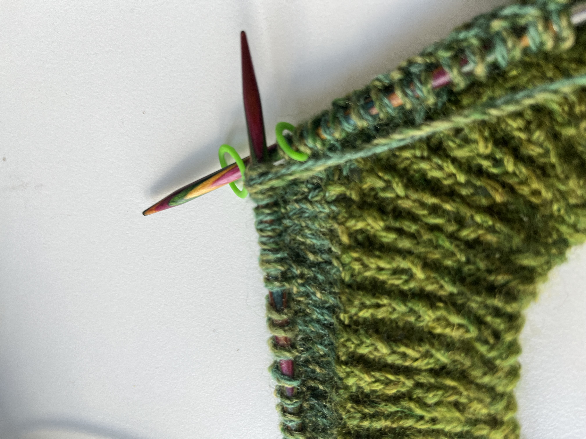
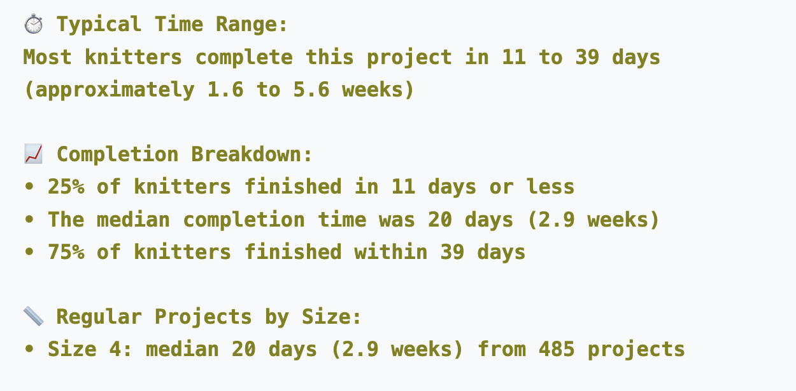
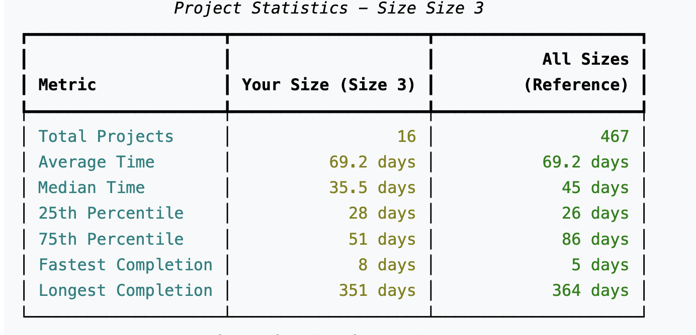

Last week, while I was doing the tubular cast off on my Lulu Slipover, I started to think about how long it takes to do the bind off, and in general, how long it takes to knit a project. I wish I was organized enough to track my knitting time on Toggl – I always think I will, but I don’t – but I do have a sense of how long I take from Ravelry’s start/end dates. (But there are so many variables! I knit multiple projects at a time, how complex each project is, etc.)
Anyway, I was also watching a podcast about LLMs, and I’d spent the past few days prior doing some data analysis work with Claude. So I couldn’t help but wonder: couldn’t one figure out how long it takes, on average, to knit a project? This is the kind of conversation I am always having in my head or haranguing any knitter friend: oh god, I really want to cast this on but I don’t have time.
The mention of Cursor came up on the podcast – which my partner was just encouraging me to use – and of course, in my usual hacky sort of way, in which I just start doing things and figure out what I’m doing later, I started with Cursor. I did start watching a how-to video and got bored five seconds in. Anyway!
Idea:
- So my basic thought was somewhere along the lines of let’s figure out the average time to knit a design.
- I needed access to the Ravelry API, so I registered as a developer to do that. (And here’s a definition of what that is, generated by Claude)
What’s an API? An API (Application Programming Interface) is like a messenger that allows different software programs to talk to each other. Think of it as a waiter in a restaurant: you (the user) don’t go into the kitchen (Ravelry’s database) yourself; instead, you tell the waiter (the API) what you want, and they bring it to you. In this case, Ravelry’s API lets my code ask for specific information about patterns and projects without needing direct access to their entire database.
Ask the user for input on what pattern they want to make
Output the average time for that pattern using the start/end dates
(I’m just going to note that while I was doing this I was also still binding off a few stitches at a time. The tubular bindoff waits for no one!)
The initial challenge was figuring out how to get the code to read the data; and that had a lot to do with what authorization I was using.
Initially, it would only output data for a fraction of the projects, so I figured out what the issue was there.
Cursor modified the code to filter the results. For example, projects that are hibernating.
One suggestion I had was to remove, or show the test knits, because that’s a different category / timescale. Also, the output would show that people had finished it in 0 days, which means that someone didn’t enter start dates or this could have been a test project.
Of course, the average time to make a design also varies by size. So it’s not particularly useful to know how long it takes on average for all sizes, because that isn’t necessarily useful to a user.
The code was then modified to ask the user to input a size, and to show the average time of completion for that size, compared to the average for all sizes.
It works!
It was amazing to see the code output results. Data! Finally an answer to my dilemma of hmm, should I cast this on?!
Here are some extracts:
The Creabea’s Tolsta Tee, with the input of size 4

Petite Knit’s Oslo sweater, with the input of size 3 
- It was really astounding to me how easy it was to work with just a focused approach. The past week of analyzing a large dataset of work taught me that I was working with too much info and asking the LLM to do too much.
- This has all been really addictive. I’ve always enjoyed getting into coding, but my interest flags a lot and my default is really hacky/let’s just see what works about how I do things (a result of years of figuring out HTML on Glogspot etc, or how I’ve ever understood anything.) I’ve been really interested in how this approach – working in this focused, talk things through way – with Cursor has helped.
What happens next?
- Adding visualizations
- Figuring out how to add summaries of discussions [on forums etc] about the time it takes to make this project. Previous attempts haven’t been successful, so this is something to figure out.
- Add links to YouTube videos about the pattern etc?
Goal:
- The goal is to turn this into a website!
- The idea would be that a user could look up a pattern and the size they’re intending to make, and that would give them an estimate of how much time it would take – and what I found really useful, how many hours per day should they knit to finish within the average time. This would be useful for everyone from first-time knitters to experienced knitters planning their projects, and also potentially to knitwear designers to know how long it takes knitters to make the pattern.
Here’s a summary of what the code does: (This section is brought to you by Claude!)
A Python tool that analyzes knitting pattern completion times.
- Pattern Analysis: The script connects to the Ravelry API to fetch pattern details and all projects made from that pattern.
def get_pattern_projects(pattern_url):
"""Fetch pattern projects using Ravelry API"""
try:
# First get the pattern name from URL
pattern_name = extract_pattern_name(pattern_url)
console.print(f"[yellow]Pattern name extracted: {pattern_name}[/yellow]")
# Get the numeric pattern ID and pattern details
api_url = f"https://api.ravelry.com/patterns/{pattern_name}.json"- Time Calculation: It calculates how long projects take by finding the difference between start and completion dates.
start_date = parser.parse(started)
end_date = parser.parse(completed)
duration = (end_date - start_date).days- Size-Specific Analysis: It groups projects by size to provide more relevant statistics.
# Add to appropriate size-specific statistics
if is_test:
if normalized_size not in test_projects_by_size:
test_projects_by_size[normalized_size] = []
test_projects_by_size[normalized_size].append(duration)
else:
if normalized_size not in projects_by_size:
projects_by_size[normalized_size] = []
projects_by_size[normalized_size].append(duration)- Detailed Statistics: The script calculates average, median, and percentile times.
def calculate_statistics(projects):
"""Calculate statistics from project durations"""
if not projects:
return None
# Sort projects for percentile calculations
sorted_projects = sorted(projects)
return {
'count': len(projects),
'average_days': round(mean(projects), 1),
'median_days': round(calculate_median(projects), 1),
'min_days': min(projects),
'max_days': max(projects),
'25th_percentile': round(sorted_projects[len(sorted_projects)//4], 1),
'75th_percentile': round(sorted_projects[len(sorted_projects)*3//4], 1)
}Friendly Output: It creates human-readable summaries of the time commitment required.
Multiple Output Formats: Results are saved as HTML, plain text, and JSON.
def save_results(pattern_url, pattern_data, stats, stats_table, time_summary, results_dir, base_filename):
"""Save results in multiple formats"""
# Extract pattern name for display
pattern_name = extract_pattern_name(pattern_url)
pattern = pattern_data['pattern']
# Generate pattern overview
pattern_overview = update_pattern_overview(pattern_data)
# Create markdown content
md_content = f"""# {pattern['name']} - Knitting Time AnalysisExceptions
- Of course, this doesn’t help with patterns that are new, and/or don’t have a lot of projects.
The code checks for sufficient data for analysis:
valid_sizes = {size: len(durations) for size, durations in projects_by_size.items() if len(durations) >= 5}
if not valid_sizes:
console.print("[red]No size data available with enough projects for analysis.[/red]")
return- The data may also be affected by how users input their start/end dates for a project.